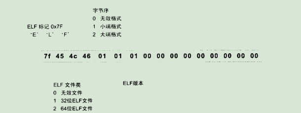

编译与链接
预处理
主要处理”#”开始的预编译指令，预编译后的文件扩展名为.i
（-E 表示只进行预编译）
主要处理规则：
- 将所有的”#define”删除，并且展开所有的宏定义。
- 处理所有条件预编译指令，比如”#if”、”#ifdef”、”#elif”、”#else”、”#endif”。
- 处理”#include”预编译指令，将被包含的文件插入到该预编译指令的位置。（注意，这个过程是递归进行的，也就是说被包含的文件可能还包含其他文件）
- 删除所有的注释”//“和”/**/“
- 添加行号和文件名表示，比如#2 “hello.c” 2，以便于编译时编译器产生调试用的行号信息，及用于编译时产生编译错误或警告时能够显示行号。
- 保留所有的”#pragram” 编译器指令，因为编译器需要使用它们。
经过预编译后的.i文件不包含任何宏定义，因为所有的宏定义已经被展开，并且包含的文件也已经被插入到.i文件中。（可以通过查看.i文件来判断宏定义是否正确或头文件包含是否正确）
编译
可分为6步：扫描、语法分析、语法定义、源代码优化、代码生成和目标代码优化
把预处理完的文件进行一系列的词法分析、语法分析、语义分析及优化后生成相应的汇编代码文件（.s）。
（-S 可得到汇编输出文件，或者直接使用cc1 hello.c也可以直接得到）
词法分析（扫描器）
首先源代码程序程序被输入到扫描器，运用一种类似有限状态机的算法，将源代码的字符序列分割成一系列的记号。
（lex程序可以实现词法分析）
语法分析（语法分析器）
对由扫描器产生的记号进行语法分析，从而产生语法树。整个分析过程采用了上下文无关语法的分析手段。简单地讲，由语法分析产生的语法树就是以表达式为节点的树。
（yacc程序可以实现语法分析）
语义分析（语义分析器）
编译器所能分析的语义是静态语义（所谓静态语义是指在编译器可以确定的语义），与之对应的是动态语义（只有在运行期才能确定的语义）
静态语义通常包含声明和类型的匹配，类型的转换。
经过语义分析阶段后，整个语法书的表达式都被标识了类型，如果有些类型需要做隐式转换，语义分析程序会在语法树中插入相应的转换节点。
中间语言生成（源码级优化器）
（注：此处源码级优化器在不同编译器中可能会有不同的定义或有其他的一些差异）
源代码级优化器会在源代码级别进行优化。
因为直接在语法树上作优化比较困难，所以源代码优化器往往将整个语法树转换成中间代码，它是语法树的顺序表示，已经非常接近目标代码，但一般跟目标机器和运行时的环境无关。
不同的编译器中有着不同的形式，比较常见的有：三地址码和P-代码。
中间代码使得编译器可以分为前端和后端。编译器前端负责产生机器码无关的中间代码，编译器后端将中间代码转换成目标机器代码
目标代码生成与优化（代码生成器和目标代码优化器）
代码生成器
将中间代码转换成目标机器代码。
目标代码优化器
对目标代码进行优化，比如选择合适的寻址方式、使用位移代替乘法运算、删除多余的指令等。
汇编
汇编器是将汇编代码转变成机器可以执行的指令，每一个汇编语句几乎都对应一条机器指令。（.o）
（可用-c来完成汇编过程，或者用as hello.s -o hello）
链接
把每个源代码模块独立的编译，然后按照需要将它们“组装”起来，这格组装模块的过程就是链接。链接的主要内容就是把各个模块之间相互引用的部分都处理好，使得各个模块之间能够正确地衔接。
链接过程主要包括了地址和空间分配、符号决议（有时也叫做符号绑定、名称绑定、名称决议，甚至叫做地址绑定、指令绑定。大体上一致，但从细节角度区分，”决议”更倾向静态链接，而”绑定”更倾向动态链接）和重定位等这些步骤。
（因为对于Object文件没有一个很合适的中文名称，把它叫做中间目标文件比较合适，简称为目标文件）
重定位
地址修正的过程也被叫做重定位，每个要被修正的地方叫一个重定位入口。重定位所做的就是给程序中没个这样的绝对地址引用的位置“打补丁”，使它们指向正确的地址
符号
用来表示一个地址，可能是一段子程序（后来发展成函数）的起始地址，也可以是一个变量的起始地址
静态链接
目标文件
目标文件的格式
从广义上看，目标文件与可执行文件的格式几乎是一样的。
（file命令可查看相应的文件格式）
目标文件的内容
目标文件中的内容有：编译后的机械指令代码、数据，符号表、调试信息、字符串等。
一般目标文件将这些信息按不同的属性，以“节”的形式存储，有时候也叫“段”。
程序源代码编译后的机器指令经常被放在代码段里，代码段常见的名字有”.code”或”.text”；全局变量和局部静态变量数据经常放在数据段，数据段一般名字都叫”.data”。
ELF文件的开头是一个”文件头”，然后就是各个段的内容。
一般C语言的编译后执行语句都编译成机器代码，保存在.text段；已初始化的全局变量和局部静态变量都保存在.data段；未初始化的全局变量和局部静态变量一般放在一个叫”.bss”的段里。（”.bss”段只是为未初始化的全局变量和局部静态变量预留位置而已，它并没有内容，所以在文件中也不占据空间）
总体来说，程序源代码被编译以后主要分成两种段：程序指令和程序数据。代码段属于程序指令，而数据段和.bss段属于程序数据。
挖掘SimpleSection.o（书中示例）
ELF段的结构分析
段的属性：段的长度、段所在的位置
代码段
数据段(.data)和只读数据段(.rodata)
.data段保存的是那些已经初始化了的全局静态变量和局部静态变量。
.rodata段存放的是只读数据，一般是程序里面的只读变量(如const修饰的变量)和字符串常量。
BSS段
.bss段存放的是(#`O′)初始化的全局变量和局部静态变量。
有些编译器会将全局的未初始化变量存放在目标文件.bss段，有些则不存放，只是预留一个未定义的全局变量符号，到最终链接成可执行文件的时候再在.bss段分配空间。
编译单元内部可见的静态变量是存放在.bss段的。
其他段
.rodata1 Read only Data，这种段里存放的是只读数据，比如字符串常量、全局const变量，跟”.rodata”一样。
.comment 存放的是编译器版本信息，比如字符串:”GCC(GNU)4.2.0”
.debug 调试信息
.dynamic 动态链接信息
.hash 符号哈希表
.line 调试时的行号表，即源代码行号与编译后指令的对应表
.note 额外的编译信息，比如程序的公司名称、发布版本号等
.strtab String Table。字符串表，用于存储ELF文件中用到的各种字符串
.symtab Symbol Table符号表
.shstrtab Section String Table段名表，用于保存段表中用到的字符串，最常见的就是段名
.plt和.got 动态链接的跳转表和全局入口表
.init和.fini 程序初始化与终结代码段
这些表名是系统保留的(以”.”为前缀)，应用程序也可以使用一些非系统保留的名字作为段名。
ELF文件头
ELF目标文件格式的最前部是ELF文件头。ELF文件头包含了描述整个文件的基本属性，比如ELF文件版本、目标机器型号、程序入口地址等。其中ELF文件中与段有关的重要结构就是段表
ELF的文件头中定义了ELF魔数、文件机器字节长度、数据存储方式、版本、运行平台、ABI版本、ELF重定位类型、硬件平台、硬件平台版本、入口地址、程序头入口和长度、段表的位置和长度及段的数量等。
ELF魔数
最前面的16个字节被ELF标准规定来标识ELF文件的平台属性，比如这个ELF字长（32位/64位）、字节序、ELF文件版本。如图所示：

最开始的4个字节是所有ELF文件都必须相同的标识码，这4个字节又被称为ELF文件的魔数。
第5个字节是用来标识ELF的文件类的，0x01表示是32位的，0x02表示是64位的。
第6个字节是字节序，规定该ELF文件是大端还是小端的。
第7个字节规定ELF文件的主版本号，一般是1。
后面9个字节ELF标准没有定义，一般填0，有些平台会使用这9个字节作为扩展标志。
文件类型
| 常量 | 值 | 含义 |
|---|---|---|
| ET_REL | 1 | 可重定位文件，一般为.o文件 |
| ET_EXEC | 2 | 可执行文件 |
| ET_DYN | 3 | 共享目标文件，一般为.so文件 |
机器类型
| 常量 | 值 | 含义 |
|---|---|---|
| EM_M32 | 1 | AT&T WE 32100 |
| EM_SPARC | 2 | SPARC |
| EM_386 | 3 | Inter x86 |
| EM_68K | 4 | Motorola 68000 |
| EM_88K | 5 | Motorola 88000 |
| EM_860 | 6 | Intel 80860 |
段表
段表是一个描述了ELF文件包含的所有段的信息，比如每个段的段名、段的长度、在文件中的偏移、读写权限及段的其他属性。
ELF文件的段结构就是由段表决定的，编译器、链接表和装载器都是依靠段表来定位和访问各个段的属性的。
重定位表
字符串表
包含字符串表和段表字符串表
符号
在链接中，将函数和变量统称为符号，函数名或变量名就是符号名
每一个目标文件都会有一个相应的符号表，其中记录了目标文件中所用到的所有符号。每个定义的符号都有一个对应的值，叫做符号值，对于变量和函数来说，符号值就是它们的地址。
强符号
弱符号
编译器将未初始化的全局变量定义作若符号处理。
定义
引用
强引用
若对外部目标文件的符号引用在目标文件被最终链接成可执行文件时，它们需要正确决议，如果没有找到该符号的定义，连接器就会报错，这种被称为强引用
弱引用
在处理弱引用时，如果该符号有定义，则链接器将该符号的引用决议；如果该符号未被定义，则链接器对该引用不报错。
一般对未定义的弱引用，链接器默认其为0，或者是一个特殊的值。
静态链接
空间与地址分配
“链接器为目标文件分配地址和空间。”这句话中的””地址和空间有两个含义：一是在输出的可执行文件中的空间；二是在装载后的虚拟地址中的虚拟空间。
按序叠加
将输入的目标文件安装次序叠加。
相似段合并
将相同性质的段合并到一起
两步链接
第一步：空间与地址分配
扫描所以的输入目标文件，并且获得它们的各个段的长度、属性和位置，并且将输入目标文件中的符号表中所以符号定义和符号引用收集起来，统一放到一个全局符号表。这一步中，链接器将能够获得所有输入目标文件的段长度，并且将它们合并，计算出输出文件中各个段合并后的长度和位置，并建立映射关系。
第二步：符号解析与重定位
使用上面第一步中收集到的所有信息，读取输入文件中段的数据、重定位信息，并且进行符号解析与重定位、调整代码中的地址等。第二步是链接过程的核心，特别是重定位过程。
VMA和LMA
VMA表示虚拟地址，LMA表示加载地址，正常情况下是一致的，但有些嵌入式系统中，LMA和VMA不同。
链接前，目标文件中的所有段的VMA都是0，因为虚拟空间还没有被分配，所以默认都是0；链接后，可执行文件中的各个段都被分配到了相应的虚拟地址。
符号地址的确定
符号解析与重定位
重定位
在链接阶段，根据符号的地址把每个在编译器时预留的临时假地址修正为真正的地址。
重定位表
重定位表也叫重定位段，用来报存与重定位相关的信息，描述如何修改相应的段里的内容。
每个要被重定位的地方叫一个重定位入口，重定位入口的偏移表示该入口在要被重定位的段中的位置。
符号解析
重定位的过程中，每个重定位的入口都是对一个符号的引用，那么当链接器需要对某个符号的引用进行重定位时，它就要求顶这个符号的目标地址。这时候链接器就会去查找由所有输入目标文件的符号表组成的全局符号表，找到相应的符号后进行重定位。
指令修正方式
寻址方式
近址寻址或远址寻址
绝对寻址或相对寻址
寻址长度为8位、16位、32位或64位
32位x86下的ELF修正方式
绝对近址32位寻址
相对近址32位寻址
这两种重定位方式指令修正方式：每个被修正的位置的长度都是32位，即4个字节；而且都是近址寻址，不用考虑段间远址寻址。
| 宏定义 | 值 | 重定位修正方法 |
|---|---|---|
| R_386_32 | 1 | 绝对寻址修正 S+A |
| R_386_PC32 | 2 | 相对寻址修正 S+A-P |
A=保存在被修正位置的值
P=被修正的位置（相对于段开始的偏移量或者虚拟地址）。注意：该值可通过r_offset计算得到
S=符号的实际地址，即由r_info的高24位指定的符号的实际地址
即绝对寻址修正后的地址为该符号的实际地址；相对寻址修正后的地址为符号距离被修正位置的地址差。
COMMON块
C++相关问题
重复代码消除
函数级别链接
全局构造与析构
.init段和.fini段
如果将一个函数放到.init或.fini段中，在main函数执行前后执行后会执行这个函数。
.init段
保存的是可执行指令，他构成了进程的初始化代码。因此，当一个程序开始运行时，在main函数被调用之前，Glibc的初始化部分安排执行这个段中的代码。
.fini段
保存着进程终止代码指令。因此，当一个程序的main函数正常退出时，Glibc会安排执行这个段中的代码。
C++与ABI
ABI
我们把符号修饰标准、变量内存布局、函数调用方式等这些跟可执行代码二进制兼容性相关的内容称为ABI。
影响ABI的因素很多，硬件、编程语言、编译器、链接器、操作系统等都会影响ABI。对于C语言的目标代码来说，以下几个方面会决定目标文件之间是否二进制兼容：
- 内置类型（如int、float、char等）的大小和在存储器中的放置方式（大端、小端、对齐方式等）。
- 组合类型（如struct、union、数组等）的存储方式和内存分布。
- 外部符号与用户定义的符号之间的命名方式和解析方式，如函数名func在C语言的目标文件中是否被解析成外部符号_func。
- 函数调用方式，如参数入栈顺序、返回值如何保持等。
- 堆栈的分布方式，比如参数和局部变量在堆栈里的位置，参数传递方法等。
- 寄存器使用约定，函数调用时哪些寄存器可以修改，哪些需要保存，等等。
对于C++来说，还有以下方面：
- 继承类体系的内存分布，如基类、虚基类在继承类中的位置等。
- 指向成员函数的指针的内存分布，如何通过指向成员函数的指针来调用成员函数，如何传递this指针。
- 如何调用虚函数，vtable的内存和分布形式，vtable指针在object中的位置等。
- template如何实例化。
- 外部符号的修饰。
- 全局对象的构造和析构。
- 异常的产生和捕获机制。
- 标准库的细节问题，RTTI如何实现等。
- 内嵌函数访问细节
静态库链接
链接过程控制
链接控制脚本
一般的链接器控制链接过程有如下三种方法：
- 使用命令行来给链接器指定参数。
- 将链接指令存放在目标文件里面，编译器经常会通过这种方法想链接器传递指令。
- 使用链接器控制脚本(可以使用ld -verbose来查看ld默认的链接脚本，通过ld -T link.script可以指定脚本为链接控制脚本)
ld链接脚本
Windows PE/COFF
Windows的二进制文件格式PE/COFF
PE的前身——COFF
COFF的文件头部包括两部分：一是描述文件总体结构和属性的映像头，另外一个是描述该文件中包含的段属性的段表。文件头后紧跟着的就是文件的段，包括代码段、数据段等，最后还有符号表等。除此之外，还有两个ELF文件中不存在的段：”.drectve段”和”.debug$S段”
映像
因为PE文件在装载时直接被映射到进程的虚拟空间中运行，它是进程的虚拟空间的映像。所以PE可执行文件很多时候被叫做映像文件。
段属性
每个段所拥有的属性包括：段名、物理地址、虚拟地址、原始数据大小、段在文件中的位置、该段的重定位表在文件中的位置、该段的行号表在文件中的位置、标志位。
链接指示信息（.drectve）
“.drectve”实际上是”Directive”的缩写，它的内容是编译器传递给链接器的指令，即编译器希望告诉链接器应该怎样链接这个目标文件。
该段最后一个属性标志位flags，为0x100A00，其意义如下：
| 标志位 | 宏定义 | 意义 |
|---|---|---|
| 0x00100000 | IMAGE_SCN_ALLGN | 1个字节对齐。相当于不对齐 |
| 0x00000800 | IMAGE_SCN_LNK_REMOVE | 最终链接成映像文件时抛弃该段 |
| 0x00000200 | IMAGE_SCN_LNK_INFO | 该段包含的是注释或其他信息 |
调试信息(.debug)
COFF文件中所有以”.debug”开始的段都包含着调试信息。
比如”.debug$S”表示包含的是符号相关的调试信息；”.debug$P”表示包含预编译头文件相关的信息；”.debug$T”表示包含类型相关的调试信息。
COFF符号表
COFF文件的符号表包含的内容几乎和ELF文件的符号表一样，主要就是符号名、符号类型、所在位置。
Windows下的ELF——PE
PE文件是基于COFF的扩展，它比COFF文件多了几个结构。最主要的变化有两个：第一个是文件最开始的部分不是COFF文件头，而是DOS MZ可执行文件格式的文件头和桩代码；第二个变化是原来的COFF文件头中的”IMAGE_FILE_HEADER”部分扩展成了PE文件文件头结构”IMAGE_NT_HEADERS”，这个结构包括了原来的”Image Header”及新增的PE扩展头部结构。
文件头
“IMAGE_NT_HEADERS”是PE真正的文件头，它包含了一个标记和两个结构体。标记是一个常量，对于一个合法的PE文件来说，它的值为0x00004550，按照小端字节序，它对应的是”P”、”E”、”\0”、”\0”这四个字符的ASCII码。文件头包含的两个结构分别是映像头、PE扩展头部文件结构。
PE数据目录
在Windows系统装载PE可执行文件时，往往需要很快地找到一些装载所需要的数据结构，比如导入表、导出表、资源、重定位表等。这些常用的数据的位置和长度都保存在了一个叫数据目录的结构里面，其实它就是前面”IMAGE_OPTIONAL_HEADER”结构里面的”DataDirectory”成员。这个成员是一个”IMAGE_DATA_DIRECTORY”的结构数组。
该结构大小为16，包含两个成员，分别是虚拟地址以及长度。DataDirectory数组里每一个袁术都对应一个包含一定含义的表。
可执行文件的装载与进程
进程虚拟地址空间
每个程序被运行起来以后，它将拥有自己独立的虚拟地址空间，这个虚拟地址空间的大小有计算机的硬件平台决定，具体地说是CPU的位数决定的：
32位的硬件平台虚拟地址空间的地址为 0x00000000~0xFFFFFFFF。
64位的硬件平台虚拟空间的地址为 0x0000000000000000~0XFFFFFFFFFFFFFFFF。
Linux
Linux的操作系统将虚拟地址空间分为两部分：
其中操作系统本身用去了一部分：从地址0xC0000000到0xFFFFFFFF，共1GB。
剩下的留给进程使用：从地址0x00000000到0xBFFFFFFF，共3GB。
Windows
对于Windows操作系统来说，它的进程虚拟地址空间划分是操作系统占用2GB，进程只剩下2GB。另外Windows有个启动参数可以将操作系统占用的虚拟地址空间减少到1GB，即跟Linux分布一样。
PAE
从硬件层面上来讲，原先的32位地址线只能访问最多4GB的物理内存。但是自从扩展至36位地址线之后，Intel修改了页映射的方式，使得新的映射方式可以访问到更多的物理内存，Intel把这个地址扩展方式叫做PAE。
在应用程序里，只有32位的虚拟地址空间，但是操作系统提供一个窗口映射的方法，把这些额外的内存映射到进程地址空间中来，应用程序可以根据需要来选择申请和映射。在Windows下，这种访问内存的操作方式叫做AWE；而想Linux等UNIX类操作系统则采用mmap()系统调用来实现。
装载的方式
程序运行时是有局部性原理的，所以可以将程序最常用的部分驻留在内存中，而将一些不太常用的数据存放在磁盘里面，这就是动态装入的基本原理。
覆盖装入和页映射是两种很典型的动态装载方法，原则上都是利用了程序的局部性原理。
动态装入的思想是程序用到哪个模块，就将哪个模块装入内存，如果不用就暂时不装入，存放在磁盘中。
覆盖装入
覆盖装入的方法把挖掘内存潜力的任务交给了程序员，程序员在编写程序的时候必须手工将程序分割成若干块，然后编写一个小的辅助代码来管理这些模块何时应该驻留内存而何时应该被替换掉。这个小的辅助代码就是所谓的覆盖管理器。
在多个模块的情况下，程序员需要手工将模块按照它们之间的调用依赖关系组织成树状结构。同时，覆盖管理器需要保证两点：
- 这个树状结构中从任何一个模块到树的根的模块都叫调用路径。当该块被调用时，整个调用路径上的模块必须都在内存中。
- 禁止跨树间调用。任意一个模块不允许跨过树状结构进行调用。
页映射
页映射是将内存和所有磁盘中的数据和指令按照”页”为单位划分成若干个页，以后所有的装载和操作的单位就是页。以目前的情况，硬件规定的页的大小有4096字节、8192字节、2MB、4MB等，最常见的Intel IA32处理器一般都使用4096字节的页。
装载管理器需要放弃当前的页以装入新页时有多重算法，如先进先出算法(FIFO)、最少使用算法(LUR)等。
这个所谓的装载管理器就是现代的操作系统，更加准确的将就是操作系统的存储管理器，比如Windows对PE文件的装载以及Linux对ELF文件的装载都是这样完成的。
从操作系统角度看可执行文件的装载
进程的建立
从操作系统的角度来看，一个进程最关键的特征就是它拥有独立的虚拟地址空间。
在有虚拟存储的情况下，进程的建立过程最开始只需要做三件事：
- 创建一个独立的虚拟地址空间
- 读取可执行文件头，并且建立虚拟空间与可执行文件的映射关系
- 将CPU的指令寄存器设置成可执行文件的入口地址，启动运行。
创建虚拟空间
虚拟空间由一组页映射函数将虚拟空间的各个页映射至相应的物理空间。创建一个虚拟空间实际上并不是创建空间而是创建映射函数所需要的相应的数据结构。在i386的Linux下，创建虚拟地址空间实际上只是分配一个页目录就可以了，甚至不设置页映射关系，这些映射关系等到后面程序发生页错误的时候再进行设置。
读取可执行文件头，并且建立虚拟空间与可执行文件的映射关系
当程序执行发生页错误时，操作系统将从物理内存中分配一个物理页，然后将该”缺页”从磁盘中读取到内存中，再设置缺页的虚拟页和物理页的映射关系，这样程序才得以正常运行。
虚拟空间与可执行文件之间的映射关系则是：当操作系统捕获到缺页错误时，它应知道程序当前所需要的的页在可执行文件中的哪一个位置。
从某种角度来看，这一步是整个装载过程中最重要的一步，也是传统意义上”装载”的过程。
这种映射关系只是保存在操作系统内部的一个数据结构。Linux中将进程虚拟空间中的一个段叫做虚拟内存区域；在Windows中将这个叫做虚拟段。
操作系统在内部保存这种结构。当程序执行发生段错误时，它可以通过查找这个一个数据结构来定位错误页在可执行文件中的位置。
将CPU指令寄存器设置成可执行文件入口，启动运行
操作系统通过设置CPU的指令寄存器将控制权交给进程，由此进程开始执行。
在操作系统层面上，它涉及内核堆栈和用户堆栈的切换、CPU运行权限的切换。
从进程的角度看，可以简单地任务操作系统执行了一条跳转指令，直接跳转到可执行文件的入口地址，即ELF文件头中保存的入口地址。
页错误
上面布置执行完以后，操作系统只是通过可执行文件头部的信息建立起可执行文件和进程虚存之间的映射关系而已，真正的指令和数据都未被装入到内存中。
当CPU可是执行程序时，发现页面是一个空页面，于是认为这是一个页错误。CPU将控制权交给操作系统，操作系统查询第二步建立的数据结构，找到空页面所在的VMA，计算出相应的页面在可执行文件中的偏移，然后再物理内存中分配一个物理页面，将精彩中该虚拟页与分配的物理页之间建立映射关系，然后把控制权再还给进程，进程从刚才页错误的位置重新开始执行。
进程虚存空间分布
ELF文件链接视图和执行视图
对于相同权限的段，把它们合并到一起当作一个段进行映射。
Segment
ELF中的一个概念，实际上是从装载的角度重新划分了ELF的各个段。在将目标文件链接成可执行文件时，链接器会尽量把相同权限属性的段分配在同一空间。在ELF中把这些属性相似、又连在一起的段叫做一个”Segment”。
描述”Segment”的结构叫做程序头，它描述了ELF文件该如何被操作系统映射到进程的虚拟空间。
ELF可执行文件中有一个专门的数据结构叫做程序头表，用来保存”Segment”的信息。因为ELF目标文件不需要被装载，所以它没有程序头表，而ELF的可执行文件和共享库文件都有。
视图
从”Section”的角度来看ELF文件就是连接视图，从”Segment”的角度来看就是执行视图。
堆和栈
段中文件所在设备主设备号和次设备号及文件节点号都是0，则表示没有映射到文件中，这种VMA叫做匿名虚拟内存区域。堆和栈属于这种段。
进程虚拟空间的概念
操作系统通过给进程空间划分出一个个VMA来管理进程的虚拟空间；基本原则是将相同权限属性、有相同映像文件的映射成一个VMA；一个进程基本上可以分为如下几种VMA区域：
代码VMA，权限只读、可执行；有映像文件。
数据VMA，权限可读写、可执行；有映像文件。
堆VMA，权限可读写、可执行；无映像文件，匿名，可向上扩展。
栈VMA，权限可读写、不可执行；无映像文件，匿名，可向下扩展。
Linux的进程虚拟空间管理的VMA的概念
Linux规定一个VMA可以映射到某个文件的一个区域，或者是没有映射到任何文件。
vdso
一个内核模块，进程可以通过访问这个VMA来跟内核进行一些通信。具体可参考Linux内核模块的资料。
堆的最大申请数量
段地址对齐
在ELF文件中，对于任何一个可装载的”Segment”，它的p_vaddr除以对齐属性的余数等于p_offset除以对齐属性的余数。
进程栈初始化
Linux内核装载ELF过程简介
Windows PE的装载
动态链接
动态链接的基本思想：把程序安装模块拆分成各个相对独立部分，在程序运行时才将它们链接在一起形成一个完成的程序。
当程序被装载时，系统的动态链接器会将程序所需的所有动态链接库装载到进程的地址空间，并且将程序中所有未决议的符号绑定到相应的动态链接库中，并进行重定位工作。
动态链接器：ld-x.x.so。
地址无关代码
PIE：地址无关可执行文件
延迟绑定(PLT)
当函数第一次被用到时才进行绑定（符号查找、重定位等）。
理论上plt的结构：
1 | func@plt: |
其中n为func这个符号引用在重定位表”.rel.plt”中的下标。moduleID为模块的ID。
真实：
.got前三项含义：
- 第一项保存的是”.dynamic”段的地址，这个段描述了本模块动态链接相关的信息。
- 第二项保存的是本模块的ID。
- 第三项保存的是_dl_runtime_resolve()的地址。
同时，PLT的中把上面最后两条指令放到PLT中的第一项。
动态链接相关结构
“.interp”段
该段保存一个字符串，即可执行文件所需要的动态链接器(ld.so)的路径。
“.dynamic”段
这个段里保存了动态链接器所需要的基本信息，比如依赖于哪些共享对象、动态链接符号表的位置、动态链接重定位表的位置、共享对象初始化代码的地址等。
可看作动态链接下ELF文件的”文件头”
“.dynsym”段(动态符号表)
“.dynsym”只保存的了与动态链接相关的符号
“.dynstr”动态符号字符串表
动态链接重定位表
“.rel.dyn”和”.rel.plt”
“.rel.dyn”对数据引用的修正，它所修正的位置位于”.got”以及数据段
“.rel.plt”是对函数引用的修正，它所修正的位置位于”.got.plt”。
动态链接时进程堆栈初始化信息
进程初始化时，堆栈里保存了关于进程执行环境和命令行参数等信息。事实上，堆栈里还保存了动态链接器所需要的一些辅助信息数组。
动态链接的步骤和实现
动态链接的步骤基本上分为3步：先是启动动态链接器本身，然后装载所需要的共享对象，最后是重定位和初始化。
动态链接器自举
自举：具有一定限制条件的启动代码。
动态链接器入口地址即是自举代码的入口，当操作系统将进程控制权交给动态链接器时，动态链接器的自举代码即开始执行。自举代码首先会找到它自举的GOT，而GOT的第一个入口保存的即是”.dynamic”段的偏移地址，由此找到了动态链接器本身的”.dynamic”段。通过”.dynamic”中的信息，自举代码便可以获得动态链接器本身的重定位表和符号表等，从而得到动态链接器本身的重定位入口，先将它们全部重定位。
装载共享对象
完成基本自举后，动态链接器将可执行文件和链接器本身的符号表都合并到一个符号表中，我们可以称它为全局符号表。然后链接器开始寻找可执行问所依赖的共享对象（.dynamic中类型的入口是DT_NEEDED支出了该可执行文件所依赖的共享对象），并将这些共享对象的名字放入到一个装载集合中。然后链接器开始从集合里取出一个所需要的的共享对象的名字，找到相应的文件后打开该文件，读取相应的ELF文件头和”.dynamic”段，然后将它相应的代码段和数据段映射到进程空间中。如果这个ELF共享对象还依赖于其他共享对象，那么将所依赖的共享对象的名字放到装载集合中。如此循环知道所有依赖的共享对象都被装载进来为止。当一个新的共享对象被装载进来的时候，它的符号表会被合并到全局符号表中，所以当所有的共享对象都被装载进来的时候，全局符号表里面将包含进程中所有的动态链接所需要的符号。
这个过程中，链接器可以有不同的装载顺序，如使用深度优先或者广度优先算法等，比较常见的算法一般都是广度优先的。
符号优先级
全局符号介入
当一个符号需要被加入全局符号表时，如果相同的符号名已经存在，则后加入的符号被忽略。
重定位和初始化
当上面的步骤完成之后，链接器开始重新遍历可执行文件和每个共享对象的重定位表，将它们的GOT/PLT中的每个需要重定位的位置进行修正。
重定位完成之后，乳沟某个共享对象有”.init”段，那么动态链接器会执行”.init”段中的代码，用以实现共享对象特有的初始化过程。相应的，共享对象中还可能有”.finit”段，当进程退出时会指向”.finit”段中的代码，可以用来实现类似C++全局对象析构之类的操作。
Linux动态链接器实现
动态链接器本身是静态链接。
动态链接器可以是PIC也可以不是，但往往使用PIC会更加简单。
显式运行时链接
显式运行时链接有时也叫运行时加载，即让程序自己再运行时控制加载指定的模块，并且可以在不需要该模块时将其卸载。
动态装载库
共享对象不需要进行任何修改就可以进行运行时装载。
动态库的装载是通过一系列由动态链接器提供的API完成的，具体的讲共有4个函数：打开动态库(dlopen)、查找符号(dlsym)、错误处理(dlerror)、以及关闭动态库(dlclose)。
dlopen()
dlopen()函数用来打开一个动态库，并将其加载到进程的地址空间，完成初始化过程，它的C原型定义为：
void * dlopen(const char *filename, int flag);
返回值为被加载模块的句柄；若加载模块失败，则返回NULL。若已经被加载过了，那么返回的是同一个句柄。
若模块间存在依赖关系，如A依赖于B，则应手工加载B，然后再加载A。
同时，加载模块时会执行模块中的”.init”段代码。
filename
第一个参数是被加载动态库的路径，如果是绝对路径（“/”开始的路径），则该函数将会尝试直接打开该动态库；如果是相对路径，那么会尝试在以一定的顺序去查找该动态库文件：
- 查找由环境变量LD_LIBRARY_PATH指定的一系列目录。
- 查找由/etc/ld.so.cache里面所有指定的共享库路径。
- /lib、/usr/lib 注意：这个查找顺序与旧的a.out装载器的顺序刚好相反，旧的a.out的装载器在装载共享库的时候会先查找/usr/lib，然后是/libc。
若filename这个参数为0，则dlopen()返回的将是全局符号表的句柄。即可以在运行时找到全局符号表里面的任何一个符号，并且可以执行他们。全局符号表包括了程序的可执行文件本身、被动态链接器加载到进程中的所有共享模块以及在运行时通过dlopen打开并且使用了RTLD_GLOBAL方式的模块中的符号
flag
第二个参数flag表示函数符号的解析方式：
- RTLD_LAZY表示使用延迟绑定。
- RTLD_NOW表示当模块被加载时即完成所有函数绑定的工作，如果有任何未定义的符号引用的绑定工作没法完成，那么dlopen()就返回错误（可用dlerror()立即捕获到相应的错误信息）。
- RTLD_GLOBAL表示将被加载的模块的全局符号合并到进程的全局符号表中，使得以后加载模块可以使用这些符号。
上面1、2两种绑定方式必选其一，第3种方式可以跟上面两者中任意一个一起使用。
dlsym()
dlsym函数基本上是运行时装载的核心部分，我们可以通过这个函数找到所需要的符号。它的定义如下：
void * dlsym(void *handle, char *symbol);
第一个参数是由dlopen()返回的动态库的句柄；第二个参数即所要查找的符号的名字。
若找到了相应的符号，则返回该符号的值；若未查找到则返回NULL。
同时，若查找到符号，则dlerror()返回NULL；若未找到，dlerror()则返回相应的错误信息。
注：若查找的符号是函数，那么返回的是函数地址；若查找的符号是变量，则返回变量的地址；若查找的符号是常量，则返回常量的值。
符号优先级
dlsym()对符号的查找优先级分两种类型。
- 如果是在全局符号表中进行符号查找，即dlopen()时，参数filename为NULL，那么由于全局符号表使用的是装载序列，所以dlsym()使用的也是装载序列。
- 如果是对某个通过dlopen()打开的共享对象进行符号查找的话，那么采用的是依赖序列的优先级，即以被dlopen()打开的那个共享对象为根节点，对它所有依赖的共享对象进行广度优先遍历，直到找到符号为止。
dlerror()
每次调用dlopen()、dlsym()、dlclose()以后，都可以调用dlerror()函数来判读上一次抵用是否成功。返回值类型为char*。如果返回NULL，则表示上一次调用成功；如果不是，则返回相应的错误消息。
dlclose()
dlclose()的作用是将一个已经加装的模块卸载。
系统会维持一个加装引用计算器，每次使用dlopen()加装某模块时，相应的计数器加一；每次使用dlclose()卸载某模块时，相应计数器减一，只有当计数器减到0时，模块才被真正地卸载掉。
卸载的过程先执行”.finit”段的代码，然后将相应的符号从符号表中去除，取消进程空间跟模块的映射关系，然后关闭模块文件。
Linux共享库的组织
共享库版本
共享库兼容性
共享库的更新可分为两类：
- 兼容性更新
- 不兼容性更新
ABI：二进制接口
共享库版本命名
libname.so.x.y.z
x表示主版本号，y表示次版本号，z表示发布版本号
符号版本
次版本号交会问题
基于符号的版本机制
共享库系统路径
FHS标准
该标准规定了一个系统中的系统文件应该如何存放，包括各个目录的结构、组织和作用。
/lib：这个位置主要存放系统最关键和基础的共享库，如动态链接库、C语言运行库、数学库等，主要是那些/bin和/sbin下的程序所需要用到的库，还有系统启动时需要的库
/usr/lib：这个目录下主要保存的是一些非系统运行时所需要的关键性的共享库，主要是一些开发时用到的库，同时还包含了开发时可能会用到的静态库、目标文件等。
/usr/local/lib：这个目录用来放置一些跟操作系统本身并不十分相关的库，主要是一些第三方的应用程序的库。
共享库查找过程
环境变量
LD_LIBRARY_PATH
用于指定动态库目录
/lib/ld-linux.so.2 -library-path /home/user /bin/ls
用动态链接器指定动态库目录启动ls
LD_PRELOAD
指定预先装载的一些动态库或是目标文件
/etc/ld.so.preload
其中配置作用跟LD_PRELOAD相同
LD_DEBUG
有几种值：
files：打印整个装载过程
bindings：显示动态链接的符号绑定过程
libs：显示共享库的查找过程
versions：显示符号版本依赖关系
reloc：显示重定位过程
symbols：显示符号查找过程
statistics：显示动态链接过程中的各种统计信息
all：显示以上所有信息
help：显示上面的各种可选值的帮助信息
用法：LD_DEBUG=files ./helloworld.out
共享库的创建与安装
Windows下的动态链接
DLL简介
进程地址空间和内存空间
基地址和RVA
DLL共享数据段
Windows允许将DLL的数据段设置成共享的，即任何进程都可以共享该DLL的同一份数据段。
DLL显示运行时链接
Windows提供了3个API为：
LoadLibrary（或者LoadLibraryEx），这个函数用来装载一个DLL到进程的地址空间，它的功能跟dlopen类似。
GetProcAddress，用来查找某个符号的地址，与dlsym类似。
FreeLibrary，用来卸载某个已加载的模块，与dlclose类似。
符号导出导入表
导出表
当一个PE需要将一些函数或变量提供给其他PE文件使用时，我们把这种行为叫做符号导出。
所有导出的符号被集中存放在了北滘镇导出表的结构中。
DataDirectory的结构数组中第一个元素就是导出表的结构的地址和长度。
导出表结构中，最后的3个成员指向的是3个数组，这3个数组是导出表中最重要的结构，他们是导出地址表（存放的是各个导出函数的RVA）、符号名表（保存的是导出函数的名字）和名字序号对应表。
序号
一个导出函数的序号就是函数在EAT中的地址下标加上一个Base值（也就是IMAGE_EXPORT_DIRECTORY中的Base，默认情况下它的值是1）。
EXP文件
链接器在创建DLL时与静态链接时一样采用两遍扫描过程，DLL一般都有导出符号，链接器在第一遍时会遍历所有目标文件并且收集所有导出符号信息并且创建DLL的导出表。链接器把这个导出表放到一个临时的目标文件叫做”.edata”的段中，这个目标文件就是EXP文件。EXP文件是一个标准的PE/COFF目标文件。
在第二遍时，链接器就把这个EXP文件当做普通的目标文件一样，与其他输入的目标文件链接在一起并且输出DLL。这个时候EXP文件中的”.edata”段也就会被输出到DLL文件中并且成为导出表。一般情况下把”.edata”段合并到只读数据段”,rdata”中。
导出重定向
即将某个导出符号重定向到另外一个DLL。
导入表
如果我们再某个程序中使用到了来自DLL的函数或者变量，那么我们就把这种行为叫做符号导入。
在PE文件中，导入表是一个IMAGE_IMPORT_DESCRIPTOR的结构体数组，每个一个结构对应一个被导入的DLL。
结构体重最后一项FirstThunk指向一个导入地址数组(IAT)，IAT是导入表中最重要的结构，IAT中每个元素对应一个被导入的符号，元素的值在不同的情况下有不同的含义：
- 在动态链接器刚完成映射还没开始重定位和符号解析时，IAT中的元素值表示相对应的导入符号的序号或者是符号名。
- 当Windows的动态链接器在完成该模块的链接时，元素值会被动态链接器改写成该符号的真正地址。
- 对于32位的PE来说，如果改元素最高位被置1，那么低31位值就是导入符号的序号值；如果没有那么元素的值是指向一个叫做IMAGE_IMPORT_BY_NAME结构的RVA。
结构体第一项还有一个指针OriginalFirstThrunk，它指向一个数组叫做导入名称表（INT），这个数组与IAT一模一样，里面的数值也一样。
延迟载入
导入函数的调用
DLL优化
重定基地址
Windows PE采用了装载时重定位的方法。在DLL模块装载时，如果目标地址被占用，那么操作系统就会为它分配一块新的空间，并且将DLL装载到该地址。
重定位过程中，涉及到绝对地址的引用都进行重定位，所有这些需要重定位的地方只需要加上一个固定的差值。
事实上由于DLL内部的地址都是基于基地址，或者是相对于基地址的RVA、那么所有需要重定位的地方都只需要加上一个固定的差值。PE里面把这种特殊的重定位过程又叫做重定基地址。
序号
一个DLL中每一个导出函数都有一个对应的序号。
导入函数绑定
DLL绑定的实现
editbin对绑定的程序的导入符号进行遍历查找，找到以后就把符号的运行时的目标地址写入到被绑定程序的导入表内（INT）。
绑定地址失效
一种情况是被依赖的DLL更新导致DLL的导出函数地址发生变化；另外一种情况是被依赖的DLL在装载时发生重定基址，导致DLL的装载地址与被绑定时不一致。
解决方法
对于第一种情况，当堆程序进行绑定时，对每个导入的DLL，链接器把DLL的时间戳和校验和保存到被绑定的PE文件的导入表中。在运行时，Windows会核对将要被装载的DLL与绑定时的DLL版本是否相同，并且确认该DLL没有发生重定基址，如果一切正常，那么Windows就不需要再进行符号解析过程了；否则Windows就忽略绑定的符号地址，按照正常的符号解析过程对DLL的符号进行解析。
C++与动态链接
组件对象模块
《COM本质论》
DLL HELL
解决DLL HELL的方法
静态链接
防止DLL覆盖
避免DLL冲突
.NET下DLL HELL的解决方案
内存
程序的内存布局
栈与调用惯例
栈
栈保存了一个函数调用所需要的维护信息，这常常被称为堆栈帧或活动记录，一般包括如下几方面内容：
- 函数的返回地址和参数
- 临时变量：包括函数的非晶体局部变量以及编译器自动生成的其他临时变量。
- 保存的上下文：包括在函数调用前后需要保持不变的寄存器。
一个i386下的函数总是这样调用的：
- 把所有或一部分参数压入栈中，如果有其他参数没用入栈，那么使用某些特定的寄存器传递。
- 把当前指令的下一条指令的地址压入栈中。
- 跳转到函数体执行。
而i386函数体的“标准”开头是这样的：
- push ebp;
- mov ebp,esp;
- [可选]sub ebp,xxx;
- [可选]push xxx;
“标准”结尾：
- [可选]pop xxx;
- mov esp,ebp;
- pop ebp;
- ret;
调用惯例
一个调用惯例一般会规定如下几个方面的内容：
- 函数参数的传递顺序和方式
- 栈的维护方式
- 名字修饰的策略
| 调用惯例 | 出栈方 | 参数传递 | 名字修饰 |
|---|---|---|---|
| cdecl | 函数调用方 | 从右至左的顺序压参数入栈【如fun(a,b),先压b再压a】 | 下划线+函数名 |
| stdcall | 函数本身 | 从右至左的顺序压参数入栈 | 下划线+函数名+@+参数的字节数，如函数int func(int a,double b)的修饰名是_func@12 |
| fastcall | 函数本身 | 头两个DWORD(4字节)类型或者占更少字节的参数被放入寄存器，其他剩下的参数按从右到左的顺序压入栈 | @+函数名+@+参数的字节数 |
| pascal | 函数本身 | 从左至右的顺序压参数入栈 | 较为复杂，参见pascal文档 |
函数返回值的传递
4字节以内：存放在eax
5—8字节：低4字节存放在eax，高1—4字节存放在edx
大于8字节：在栈上额外开辟空间，将返回值传入，并将该地址指针传给eax，返回后，调用方将eax指向的地址的值拷贝出来。
堆和内存管理
Linux进程堆管理
Windows进程堆管理
堆管理器
堆分配算法
空闲链表
将堆中各个空闲的块按照链表的方式连接起来，当用户请求一块空间时，可以遍历整个列表，直到找到合适大小的块并且将它拆分；当用户释放空间时将它合并到空闲链表中。
位图
其核心思想是将整个堆划分为大量的块，每个块的大小相同。当用户请求内存的时候，总是分配整数个块的空间给用户，第一个块我们称为已分配区域的头，其余的称为已分配区域的主体。而我们可以使用一个整数数组来记录块的使用情况，由于每个块只有头/主体/空闲三种状态，因此仅仅需要两位即可表示一个块，因此称为位图。
对象池
当被分配对象的大小是较为固定的几个值，这时候我们可以针对这样的特征设计一个更为高效的堆算法，称为对象池。
对象池的思路：如果每一次分配的空间大小都一样，那么就可以按照这个每次请求分配的大小作为一个单位，，把整个堆空间划分为大量的小块，每次请求的时候只需要找到一个小块就可以了。
对象池的管理方法可以采用空闲链表，也可以采用位图，与它们的区别仅仅在于它假设了每次请求的都是一个固定的大小。
运行库
入口函数和程序的初始化
一个典型的程序运行步骤大致如下：
- 操作系统在创建进程后，把控制权交到了程序的入口，这个入口往往是运行库中的某个入口函数。
- 入口函数对运行库和程序运行环境进行初始化，包括堆、I/O、线程、全局变量构造，等等。
- 入口函数在完成初始化之后，调用main函数，正式开始执行程序主体部分。
- main函数执行完毕以后，返回到入口函数，入口函数进行清理工作，包括全局变量析构、堆销毁，关闭I/O等，然后进行系统调用结束进程。
入口函数的实现
GLIBC入口函数
静态glibc
MSVC CRT 入口函数
入口函数mainCRTStartup的总体流程：
- 初始化和OS版本有关的全局变量
- 初始化堆
- 初始化I/O
- 获取命令行参数和环境变量
- 初始化C库的一些数据
- 调用main并记录返回值
- 检查错误并将main的返回值返回
运行库与I/O
在Linux中，值为0、1、2的fd分布代码标准输入、标准输出和标准错误输出。
fd
在内核中，每一个进程都有一个私有的“打开文件表”，这个表是一个指针数组，每一个元素都指向一个内核的打开文件对象，而fd就是这个表的下标。
stdin、stdout、stderr均是FILE结构的指针。
句柄
对于Windows中的句柄，与Linux中的fd大同小异，不过Windows的句柄是其下标经过某种线性变换之后的结果。
I/O初始化
首先I/O初始化函数需要在用户空间中建立stdin、stdout、stderr及其对应的FILE结构，使得程序进入main之后可以直接使用printf、scanf等函数。
MSVC CRT的入口函数初始化
MSVC的入口函数初始化主要包含两部分，堆初始化和I/O初始化。
系统堆初始化
主要由函数_heap_int完成。
I/O初始化
MSVC的I/O初始化就是要构造一个二维的打开文件表。由_ioinit函数完成。主要完成如下几个工作：
- 建立打开文件表。
- 如果能够继承自父进程，那么从父进程获取继承的句柄。
- 初始化标准输入输出。
C/C++运行库
C语言运行库
一个C语言运行库大致包含如下功能：
- 启动与退出：包括入口函数及入口函数所依赖的其他函数等。
- 标准函数：由C语言标准规定的C语言标准库所拥有的函数实现。
- I/O：I/O功能的封装和实现。
- 堆：堆的封装和实现。
- 语言实现：语言中一些特殊功能的实现。
- 调试：实现调试功能的代码。
C语言标准库
C语言标准库一般包含：
- 标准输入输出（stdio.h）
- 文件操作（stdio.h）
- 字符操作（ctype.h）
- 字符串操作（string.h）
- 数学函数（math.h）
- 资源管理（stdlib.h）
- 格式转化（stdlib.h）
- 时间/日期（time.h）
- 断言（assert.h）
- 各种类型上的常数（limits.h&float.h)
- 变长参数（stdarg.h）
- 非局部跳转（setjmp.h）
变长参数
如print即使用变长参数。
非局部跳转
使用非局部跳转，可以实现从一个函数体内向另一个事先登记过的函数体内跳转，而不用担心堆栈混乱。
setjmp与longjmp函数
glibc与MSVC CRT
运行库与多线程
CRT的多线程困扰
线程的访问权限
实际运用中线程拥有自己的私有存储空间：
- 栈（尽管并非完全无法被其他线程访问）
- 线程局部存储（TLS）。线程局部存储是某些操作系统为线程单独提供的私有空间，但通常只具有很有限的尺寸。
- 寄存器（包括PC寄存器），寄存器是执行流的基本数据，因此为线程私有。
fread实现
缓冲
系统调用
系统调用介绍
Linux系统调用
在x86下同下，系统调用由0x80中断完成，eax寄存器用于表示系统调用的接口号（比如1表示退出进程，2表示创建进程，3表示读取文件或IO，4表示写文件或IO）
系统调用原理
特权级与中断
在现代操作系统中，通常具有两种特权级别，分别为用户模式和内核模式，也被称为用户态和内核态。
系统调用是运行在内核态的，而应用程序基本都是运行在用户态的。
操作系统通过中断来从用户态切换到内核态。
中断
中断是一个硬件或软件发出的请求，要求CPU暂停当前的工作转手去处理更加重要的事情。
中断一般具有两种属性，一个称为中断号（从0开始），一个称为中断处理程序。
不同的中断具有不同的中断号，而一个中断处理程序对应一个中断号。
在内核中，有个数组称为中断向量表，这个数组的第n向包含了指向第n号中断的中断的中断处理程序的指针。
当中断到来时，CPU会暂停当前执行的代码，根据中断的中断号，在中断向量表中找到对应的中断处理程序，并调用它。中断处理程序执行完成之后，CPU会继续执行之前的代码。
系统调用
和中断一样，系统调用都有一个系统调用号，这个系统调用号通常就是系统调用在系统调用表中的位置。
基于int的Linux的经典系统调用实现
以fork为例的Linux系统调用：
- 触发中断
- 切换堆栈
- 保存当前ESP、SS的值
- 将ESP、SS的值设置为内核栈的相应值。
- 中断处理程序
Linux的新型系统调用机制
Linux在2.5版本起开始支持一种新型的系统调用机制。
linux-gate.so.1是操作系统生成的一个虚拟动态库（VDSO），这个库总是被加载在地址0xffffe000的位置上。(32位)
Windows API
Windows API是指Windows操作系统提供给应用程序开发者的最底层、最直接与Windows打交道的接口。